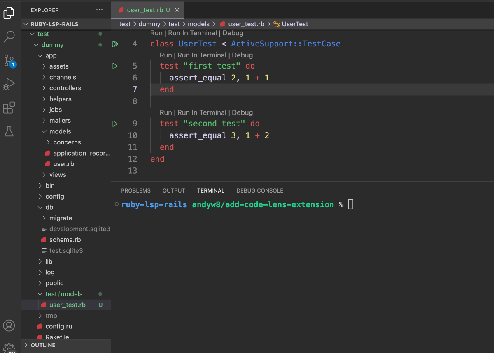

class RubyLsp::Rails::CodeLens

This feature adds several CodeLens features for Rails applications using Active Support test cases: - Run tests in the VS Terminal - Run tests in the VS Code Test Explorer - Debug tests
The code lens request informs the editor of runnable commands such as tests
Example:¶ ↑
For the following code, Code Lenses will be added above the class definition above each test method.
“‘ruby Run class HelloTest < ActiveSupport::TestCase # <- Will show code lenses above for running or debugging the whole test test “outputs hello” do # <- Will show code lenses above for running or debugging this test # … end
test “outputs goodbye” do # <- Will show code lenses above for running or debugging this test # … end end ““
The code lenses will be displayed above the class and above each test method.
Constants
- BASE_COMMAND
- ResponseType
Attributes
Public Class Methods
# File lib/ruby_lsp/ruby_lsp_rails/code_lens.rb, line 46 def initialize(uri, dispatcher) @_response = T.let([], ResponseType) @path = T.let(uri.to_standardized_path, T.nilable(String)) @group_id = T.let(1, Integer) @group_id_stack = T.let([], T::Array[Integer]) dispatcher.register(self, :on_call_node_enter, :on_class_node_enter, :on_def_node_enter, :on_class_node_leave) super(dispatcher) end
Public Instance Methods
# File lib/ruby_lsp/ruby_lsp_rails/code_lens.rb, line 58 def on_call_node_enter(node) message_value = node.message return unless message_value == "test" arguments = node.arguments&.arguments return unless arguments&.any? first_argument = arguments.first content = case first_argument when Prism::InterpolatedStringNode parts = first_argument.parts if parts.all? { |part| part.is_a?(Prism::StringNode) } T.cast(parts, T::Array[Prism::StringNode]).map(&:content).join end when Prism::StringNode first_argument.content end return unless content && !content.empty? line_number = node.location.start_line command = "#{BASE_COMMAND} #{@path}:#{line_number}" add_test_code_lens(node, name: content, command: command, kind: :example) end
# File lib/ruby_lsp/ruby_lsp_rails/code_lens.rb, line 97 def on_class_node_enter(node) class_name = node.constant_path.slice if class_name.end_with?("Test") command = "#{BASE_COMMAND} #{@path}" add_test_code_lens(node, name: class_name, command: command, kind: :group) end @group_id_stack.push(@group_id) @group_id += 1 end
# File lib/ruby_lsp/ruby_lsp_rails/code_lens.rb, line 109 def on_class_node_leave(node) @group_id_stack.pop end
# File lib/ruby_lsp/ruby_lsp_rails/code_lens.rb, line 87 def on_def_node_enter(node) method_name = node.name.to_s if method_name.start_with?("test_") line_number = node.location.start_line command = "#{BASE_COMMAND} #{@path}:#{line_number}" add_test_code_lens(node, name: method_name, command: command, kind: :example) end end